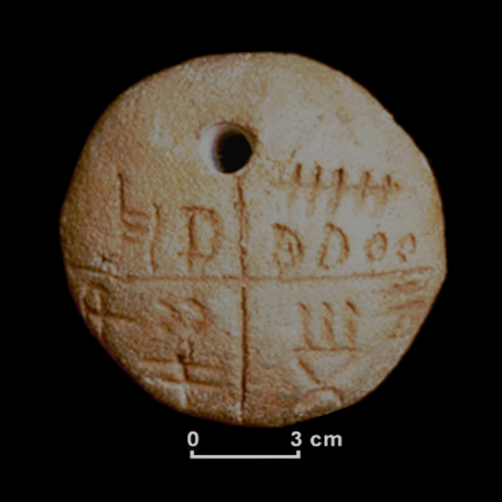
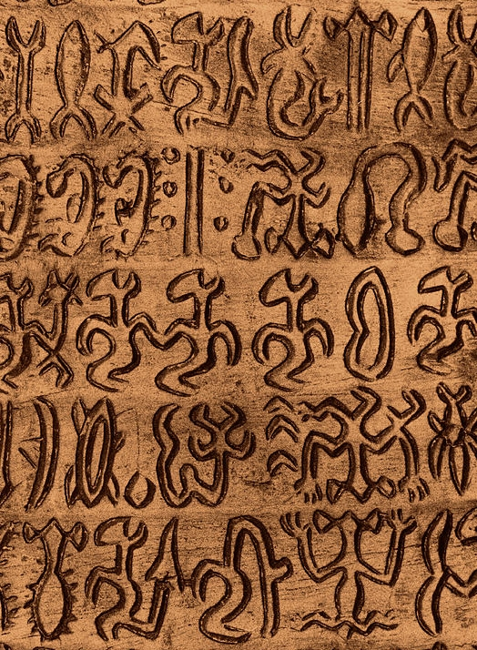

Argiltabuleto de Tărtăria\
Indusskribaj sigiloj\

La skribo Rongorongo de Paskinsulo
Kio enhaviĝas ĉi tie?
Ĉi tiu sekcio enhavas skribosistemojn kaj aliajn rilatajn temojn, kiuj ne apartenas al la aliaj kategorioj. Ĉi tiu sekcio estas kiel oni povas lerni pri formoj de proto-skriboj, nedeĉifritaj skriboj kaj aliaj interesaĵoj.